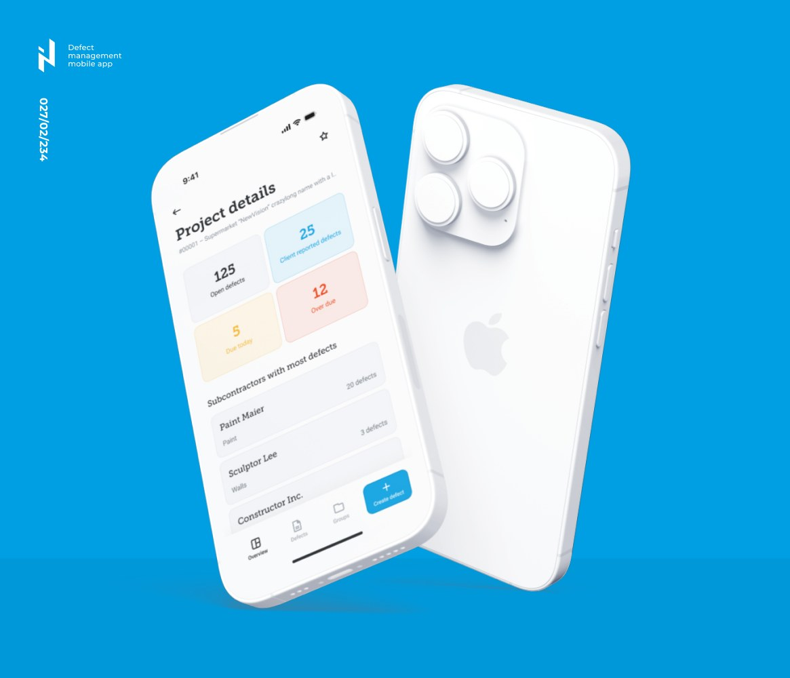

Map the flow
Trace KEAN reports from site, finance, sales, and partners, then name the first data gaps to close.
Saw bbf: hiring for the KEAN high-rise program. That points to a bigger coordination load across field work, project reports, sales data, and leadership decisions.
Elinext can help turn that load into clear software flow. The aim is simple: fewer manual reports, better project status, and faster action when risk appears.
KEAN tells us bbf: is moving from premium projects into a larger mixed-use program. That means site updates, factory relocation, permits, sales materials, and partner data must stay aligned. The bottleneck is not only construction software. It is the daily handoff between site teams, project directors, sales, finance, and HQ. If that flow stays manual, delays show up late and managers lose time checking reports.
A dedicated Elinext squad works under your project owner and delivers one pilot for KEAN project visibility.
Trace KEAN reports from site, finance, sales, and partners, then name the first data gaps to close.
Create one project-health view with milestones, risks, document status, photos, and clear owner notes.
Add simple field capture for progress, issues, and approvals, designed for fast use on site.
Set automated checks, test data, and weekly demos so the tool improves without slowing operations.

Elinext built a production-ready field app with offline workflows, faster defect reporting, and better project data accuracy.
Read case study
A web portal and mobile app helped agents update and share current property details through QR codes.
Read case study